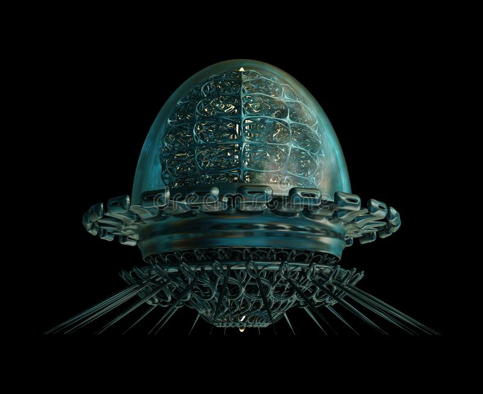

Plan OMEGAAPOLLION
Ten program zakłada za cel, wykorzystanie odnalezionej technologii po lewej do odkrycia jej pochodzenia, dziś jest (05.05.2058), ta, wczoraj miałem urodziny, i ekscytuje się tą misją, to będzie moja ostatnia misja w agencji, rozpocznie się dzień przed urodzinami mojej żony, obym wrócił na czas. Ale wracając, dokładnie nie wiadomo co dokładnie mnie czeka, z badań wynika że ta maszyna ma zdolności psychometrii, samoanalizy, bezpośrednio potrzebuje rozwiniętego i sprawnego umysłu, miałbym porozmawiać z tą maszyną? Są teorie że ta maszyna potrafi odwracać entropię, cofać się więc w czasie, tworzyć czarne dziury lub zamieniać materię w energię i na odwrót, ale wiadomo na pewno że z jakichś do końca nie poznanych mechanizmów produkuje tłumione pole elektromagnetyczne, ujemne ciśnienie i coś na wzór antygrawitacji, być może antymaterii. Testy na zwierzętach wykazały że po za niebespieczeństwem technicznym występuje tylko niebezpieczeństwo memetyczne (poznawcze).
Tak więc czy się boję? Trochę tak. Ale 92% zwierząt przeżyło eksperyenty plus jeden skazaniec (osoba skazana na sierć wykorzystana do eksperymentu), 61% (w tym skazaniec) wykazały po eksperymentach upośledzenia i trudności umysłowe wcześniej nie występujące, 19% doznało poważnego uszczerbku na zdrowiu po za psychicznym. Z zebranych danych zminimalizowano ryzyko niepowodzenia, jednak mam być kimś kto obsłuży tę machinę i przetrwa informacyjny szum po wejściu do niej.
Urządzenie pochodzi z głębin pradawnych jaskiń Antarktydy i jest najbardziej tajemniczym artefaktem w agencji o jakich mi wiadomo, a mamy ich sporo, chyba założę dziennik przed tą misją, aby nie oszaleć za bardzo i w razie krótkotrwałych utrat pamięci (co dzięki badaniom wiemy że może się wydarzyć) wszystko zapisywać, mam nadzieję że to nie potrwa długo, i że nic mi sie nie stanie, następnego dnia są urodziny mojej żony, a chcę ją zabrać na romantyczną kolację